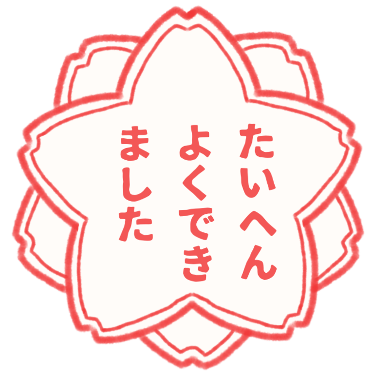

ホーム
Diary Studioについて
Diary Studio
日記を作る
日記のスタイルを選ぶ
絵日記を作る
ひとこと日記を作る
お問い合わせ
☰
メニュー
ホーム
Diary Studioについて
日記を作る
日記のスタイルを選ぶ
絵日記を作る
ひとこと日記を作る
お問い合わせ
絵日記を作る
お気に入りの写真に文章を添えて
オリジナルの絵日記を作れます
文字の色や背景などのスタイルを設定して、
自分好みの絵日記を作成しましょう!
プレビュー
canvas要素をサポートしていないため、絵日記機能はつかえません
▼スタイルの設定（開く）
背景
白
黒
テキストの色
黒
白
その他：
枠線の色
黒
白
その他：
フォント
シンプル
モダン
筆文字
スタンプ
選択
選択中のスタンプ：
スタイルのリセット
日付の表示設定
なし
あり
画像の選択/変更
削除
日記の文字入力欄
絵日記を保存（PNG画像）
スタンプを選択

閉じる